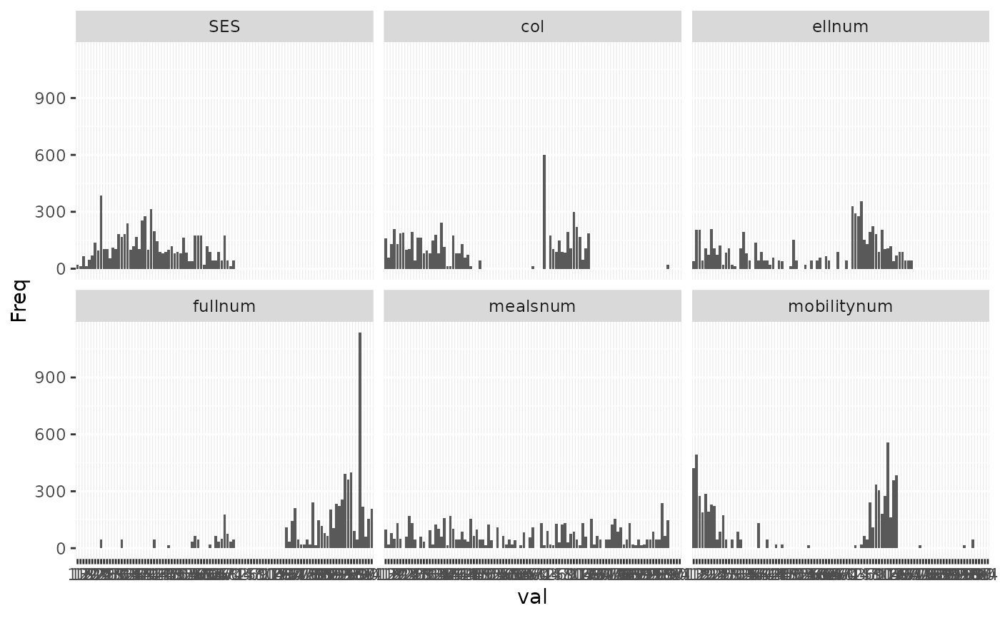

R/make_scales.R
svy_make_scale.RdThis function creates a scale by calculating the mean of a set of items,
and prints and returns descriptives that allow to assess internal consistency
and spread. It is primarily based on the psych::alpha function, with
more parsimonious output and some added functionality.
svy_make_scale( df, scale_items, scale_name, print_hist = TRUE, print_desc = TRUE, scale_title = scale_name, reversed = NULL, r_key = NULL )
| df | A srvyr survey object |
|---|---|
| scale_items | A characters vector containing the items for that scale (variables in df) |
| scale_name | Character. The name of the variable the scale should be saved as |
| print_hist | Logical. Should histograms of the scale and its items be printed. |
| print_desc | Logical. Should descriptive statistics for the scale be printed. |
| scale_title | Character. Name of scale for printing. Defaults to scale_name |
| reversed | (optional) A characters vector containing the items that should be reverse-coded ( subset of scale_items) |
| r_key | (optional) Numeric. Set to the possible maximum value of the scale if the whole scale should be reversed, or to -1 to reverse the scale based on the observed maximum |
The survey object with the scale added as an additional variable.
library(survey) #> Loading required package: grid #> Loading required package: Matrix #> Loading required package: survival #> #> Attaching package: ‘survey’ #> The following object is masked from ‘package:graphics’: #> #> dotchart data(api) svy_df <- svydesign(id = ~1, strata = ~stype, weights = ~pw, data = apistrat, fpc = ~fpc) scale_items <- c("ell", "meals", "mobility", "col.grad", "full") scale_reversed <- c("col.grad", "full") svy_make_scale(svy_df, scale_items, "SES", reversed = scale_reversed) #> #> Descriptives for SES scale: #> Mean: 41.113 SD: 13.525 #> Cronbach's alpha: .74 #> #> The following items were reverse coded (with min and max values): #> col.grad (0, 100) #> full (24, 100)  #> Stratified Independent Sampling design #> update(df, SES = rowMeans(df[, scale_items_num]$variables, na.rm = T))